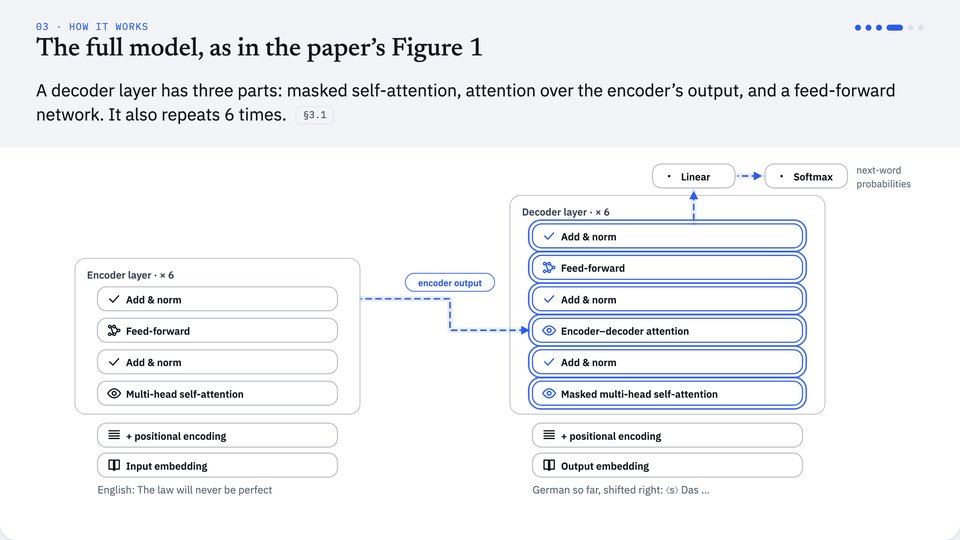

Films
Each film is one page. Open it in any browser, pause anywhere, jump between chapters, or play it at up to 4× speed.

AgentGarten: Code Worlds for Evolving Agents
Keep the world’s rules in code and let a video model only paint what agents see. Covers exact replay for training, and agents that improve each round by writing playbooks.

SelfSearch: Reward-Free Search for Self-Improving Agents
A coding agent edits its own code and learns from the records of its earlier self-edits, with no benchmark score in the loop. Covers two lineages sharing records, and tools that carry over to real tasks.
Mistral 7B
A 7B model that beats Llama 2 13B by bounding attention: each layer looks back 4,096 tokens and depth carries the rest. Covers the rolling buffer cache, grouped-query attention and chunked pre-fill.

Attention Is All You Need
The Transformer: every word looks at every other word at once, so a sentence is processed in parallel. Covers queries, keys and values, multi-head attention, and the encoder-decoder stack, one sentence followed through every step.
Simple, but never wrong
Simplify the words, never the method
Plain language throughout. Every component, name and number the paper uses stays as it is.
Every claim cites the paper
Each caption shows the section or table it comes from. Anything we added is labelled “Our note”.
One running example
One example goes through the whole mechanism, so you can see how it changes at each step.
Watch a paper in 18 minutes
Or in under 5 at 4× speed. No sign-up and nothing to install.